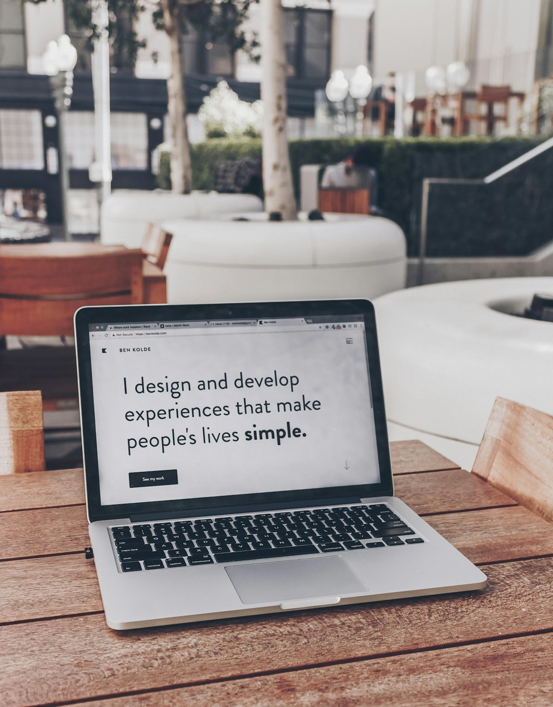

La estructura del catálogo ampliado de Glassmorphism
Por qué fijamos primero las siete vistas del catálogo — y sus secciones — antes de explorar variantes visuales, con el componente Markdown como caso de prueba.
Leer más →
Por qué fijamos primero las siete vistas del catálogo — y sus secciones — antes de explorar variantes visuales, con el componente Markdown como caso de prueba.
Leer más →
Cómo mantenemos los mismos componentes y el mismo contenido en HTML/CSS/JS y en Next.js sin duplicar la fuente de verdad.
Leer más →
La familia de tokens P3 y por qué el desenfoque backdrop-* vive en un único módulo (surface.ts) en lugar de repetirse por componente.